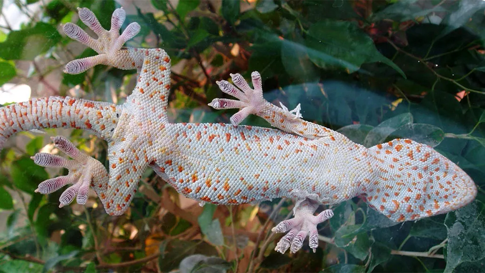

Geckos are capable of moving across vertical and inverted surfaces without any visible adaptations. Investigate the structure of gecko feet and the physical mechanisms that ensure their adhesion to surfaces. Propose artificial methods to replicate this effect.
